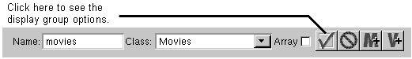
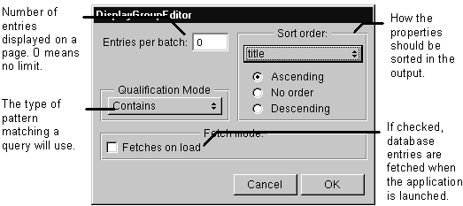

Table of Contents
Table of Contents
 Previous Section
Previous Section
Table of Contents
Previous Section
Select the WODisplayGroup variable.
Click the checkmark button in the object browser.


A WODisplayGroup performs certain database-related operations: it can display records, organize results into batches, fetch records from the database, as well as query the database. You use the options panel to set up how the WODisplayGroup performs these operations.
The Entries per batch field specifies the number of records displayed at a time. For example, suppose you are displaying one hundred records. Instead of displaying all of these at once, you can set the batch size so that the page displays a more manageable number (for example, 10). If you set a batch size, the component should have buttons that will return the next batch of records and the previous batch of records. (Bind the buttons to the WODisplayGroup methods displayNextBatch and displayPreviousBatch.) If you don't want records displayed as batches, set the size to 0.
The Sort order options specify how the records are sorted. The pop-up list shows all of the class properties for the WODisplayGroup's entity. Select the class property that the results should be sorted upon and then specify the sort order.
If you're creating a component that is simply going to list a set of records from the database, you probably want the Fetches on Load check box checked. If checked, the WODisplayGroup performs a fetch when the application starts up. If you're creating a query-based application, you probably want this check box turned off so that the user controls when the fetch is performed.
Qualification Mode sets how the pattern matching works. When a user enters a string in a text field to search the database for that string, the qualification mode sets which part of the string must be matched.
 Next Section
Next Section